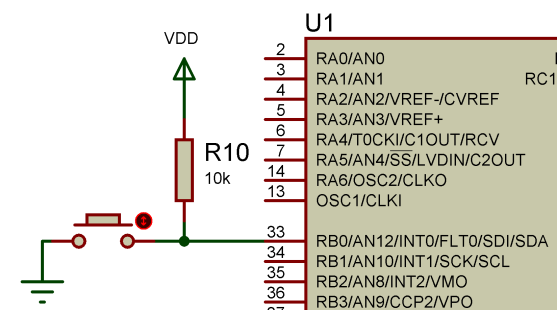

Vous n'êtes pas seuls dans l'Univers !

/
La programmation des PIC18F - Page 3
La programmation des PIC18F - Les ports d’entrées-sorties du PIC18F4550.
1) Généralités sur les ports
La plupart des broches du PIC18F4550 sont accessibles en entrée et en sortie tout-ou-rien, c’est-à-dire qu’il peut en entrer ou en sortir un état haut logique (+VCC) ou un état bas logique (0V).
Les broches sont regroupées par ports, chaque port pouvant contenir jusqu’à 8 broches. Il est possible d’utiliser chaque patte indépendamment en entrée, en sortie ou pour d’autres fonctions dont nous ne parlerons pas dans ce chapitre.

Pour localiser les broches correspondant aux différents
ports, il faut se reporter au brochage du composant dans le datasheet
(« Pin Diagrams », page 2). Sur la plupart des
broches, le premier élément de la description est
de la forme Rxy, avec x une lettre, correspondant au port auquel
appartient la broche, et y le numéro de la broche dans le
port. Par exemple la broche 6 du composant correspond à RA4,
c’est-à-dire au bit 4 du port A.
Cependant sur les broches 1 et 14 la description sous forme de port
n’est pas en premier dans la liste, mais en dernier.
C’est parce que ces broches on des affectations
spéciales prioritaires sur les ports. La broche 1 est par
défaut la broche de RESET (/MCLR), on peut
l’utiliser comme RE3 en inhibant le RESET externe
grâce à un bit de configuration (comme pour
configurer l’horloge). La broche 14 peut être
utilisée comme RA6 dans les modes d’horloge qui
n’utilisent pas un résonateur externe. Je
recommande d’éviter d’utiliser ces
broches en entrée-sorties sauf dans les cas où il
est impossible de faire autrement, cela évite des
problèmes.
2) Les principaux registres liés aux ports
Il y a deux registres que l’on utilise pour commander les ports : les registres TRISx et PORTx (avec x la lettre correspondant au port).
Les registres TRISx permettent de configurer la direction
(entrée ou sortie) de chaque broche du port. Un 1 sur le bit
y de ce registre placera Rxy en entrée, un 0 le placera en
sortir. Pour le retenir c’est simple : 1 ressemble
à la lettre « I » comme «
Input », 0 ressemble à la lettre « O
» comme « Output ».
Par exemple pour placer RB2 en sortie, on placera le bit 2 de TRISB
à 0.
Les registres PORTx permettent de placer la valeur de sortie ou de lire
la valeur en entrée du port x. Lorsque la broche y du port x
est placé en sortie, placer à 1 le bit y de PORTx
placera Rxy à 1, idem avec 0. Lorsque la broche y du port x
est placé en entrée, le bit y de PORTx est
l’image de la broche Rxy.
3) Un chenillard
{kind=link}
Nous allons faire un chenillard, c’est-à-dire
faire s’allumer l’une après
l’autre chacune des LEDs, connectées au PORTD
comme ci-dessus, l’une après l’autre, un
peu comme dans K2000. On remarque que les anodes des LEDs sont
connectées au VDD, et leurs cathodes aux broches du PIC via
une résistance de limitation de courant. Cela signifie que
pour allumer une LED, il faudra mettre la broche correspondant
à l’état logique 0. La raison pour
laquelle les LEDs ont été branchées
dans ce sens plutôt que dans l’autre (plus
intuitif), est que le composant supporte mieux d’absorber du
courant que d’en fournir.
La première chose à faire est de configurer
correctement votre horloge. Ensuite, puisqu’on utilisera le
PORTD pour allumer des LEDs, nous devons configurer
l’ensemble de notre PORTD en sortie. Il faut donc mettre le
registre TRISD à 0. Nous allons aussi initialiser les LEDs
de sorte à ce qu’au démarrage elles
soient toutes éteintes, en plaçant à 1
tous les bits de PORTD.
Code source : Exemple 1 - Configurer toutes les 8 broches du PORT D en sorties et éteindre les LED
TRISD = 0; /* Utilisation de toutes les 8 broches du PORT D en tant que sorties */
PORTD = 0xFF; /* Eteindre les LED */
Puis ensuite il vous suffit de créer une boucle infinie, dans laquelle chaque cycle correspondra à un aller complet de la LED allumée. Pour faire cet aller complet une solution possible est d’utiliser une boucle for, dans laquelle à chaque cycle le paramètre est décalé d’un bit à gauche, et ce jusqu’à ce que ce bit dépasse le bit 7 (on a 8 LEDs, soit des bits de 0 à 7). Entre chaque étape de cette boucle for un placera une temporisation pour limiter la vitesse de défilement de notre chenillard.
Code source : Exemple 2 - Un chenillard
while(1)
{
for(j = 1; j < 129; j <<= 1)
{
PORTD = ~j; /* Mise à jour des LED */
for(i = 0; i < 10000; i++); /* Attente */
}
}
4) Un chenillard activé par un bouton
{kind=link}
Nous allons maintenant modifier notre code pour utiliser un bouton pour activer le chenillard. C’est-à-dire que lorsqu’on appuie sur le bouton, le chenillard démarre, et s’arrêtera à la fin du cycle pendant lequel on relâche le bouton.
Il va donc vous falloir mettre RB0 en entrée via le registre
TRISB, puis tester régulièrement l’état du bit 0 de PORTB pour connaître l’état du bouton.
Je ne pense pas qu’il soit nécessaire de détailler davantage. Voici un code qui fonctionne :
Code source : Exemple 3 - Un chenillard activé par un bouton
#include <p18f4553.h>
void main(void)
{
int i, j;
OSCON |= ((7 << 4) | (1 << 1)); /* Utilisation de l'oscillateur interne du PIC18F4553 */
TRISD = 0; /* Utilisation de toutes les 8 broches du PORT D en tant que sortie */
PORTD = 0xFF; /* Eteindre toutes les LED */
TRISB |= 1; /* Utilisation de la broche « RB0 » en tant qu'entrée */
while(1)
{
if((PORTB & 1) == 0x00) /* Test du bouton */
{
for(j = 1; j < 129; j <<= 1)
{
PORTD = (~j); /* Mise à jour des LED */
for(i = 0; i < 10000; i++); /* Attente */
}
}
}
}
Qui fonctionne ? Vraiment ? Si vous l’avez essayé, vous vous êtes peut-être rendu compte que le bouton ne fonctionne pas. Pourtant, vous avez bien configuré ce bouton en entrée, et l’avez testé correctement. En fait, les 5 premières broches du PORTB peuvent aussi être utilisées comme entrées analogiques. Jusque-là pas de soucis, puisque par défaut, les broches sont toutes des entrées sorties numériques… Sauf que pour ces broches, il existe un bit de configuration qui permet de les mettre en entrée analogique dès le démarrage du composant. Il suffit de le configurer correctement et le programme fonctionne !
{kind=link}
Ce genre de subtilités fait partie des choses qu’on ne peut pas deviner, et qui peuvent nous faire prendre la tête quelques heures. Pour s’en sortir la seule solution est de fouiller dans le datasheet, jusqu’à trouver ce que l’on cherche.
Commentaires (0)
Ajouter un commentaire